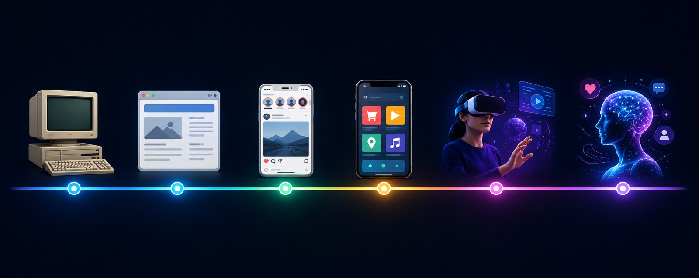

Evolution of Digital Media
From the magnetic tapes of the 1980s to the artificial intelligence era, digital media has undergone a radical transformation that reshaped how wecommunicate, entertain, and interact with the world.
Introduction
From the magnetic tapes of the 1980s to the artificial intelligence era, digital media has undergone a radical transformation that reshaped how we communicate, entertain, and interact with the world. This project explores that journey — tracing the milestones that defined each era, from the rise of personal computers and the internet to the explosion of streaming, gaming, and immersive virtual experiences. Navigate through our pages to discover how multimedia evolved and where technology is taking us next.
Digital Media
Digital media has changed how people consume content by making information and entertainment more accessible, interactive, and personalized. Over the years, technological advancements have transformed the way people watch videos, listen to music, and share experiences. Physical formats such as VHS tapes, CDs, and printed photographs have gradually been replaced by digital alternatives, including streaming services, online music platforms, and AI-powered content creation tools. These innovations have not only improved convenience and accessibility but have also created new opportunities for creativity, communication, and global connectivity.

Explore Our Topics
Dive deeper into each chapter of the digital media story.

Media Evolution
Discover how home video, music, news and photography transformed from physical formats to digital platforms.
Learn More
Gaming & VR
Learn how gaming evolved from arcade machines to immersive virtual reality experiences.
Learn MoreAI & Future
Explore artificial intelligence, AI-generated images, and the future of digital content.
Learn More